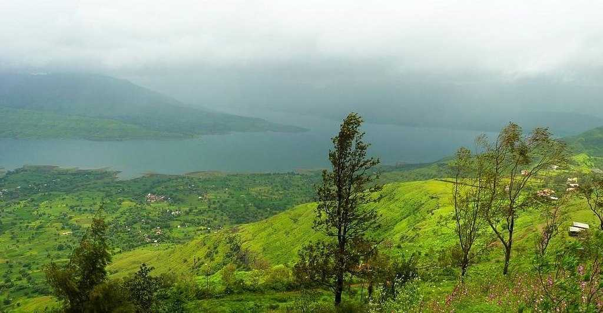
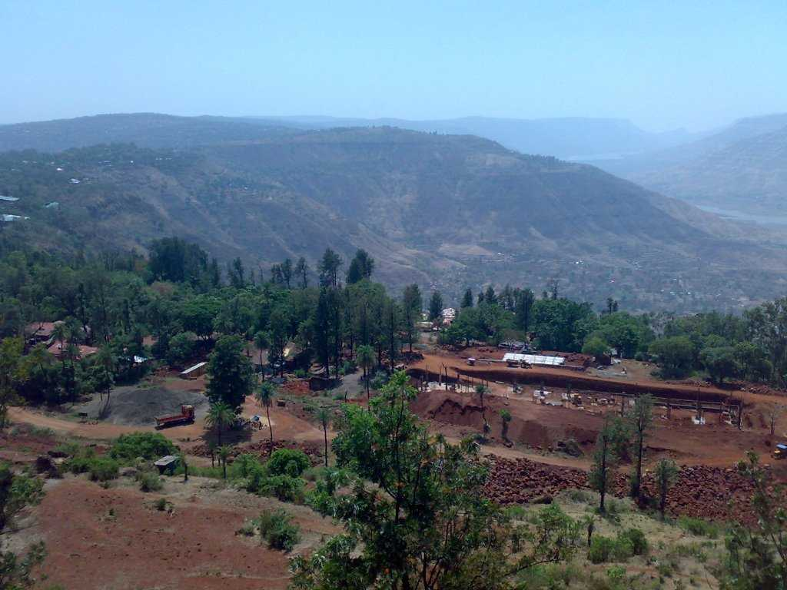
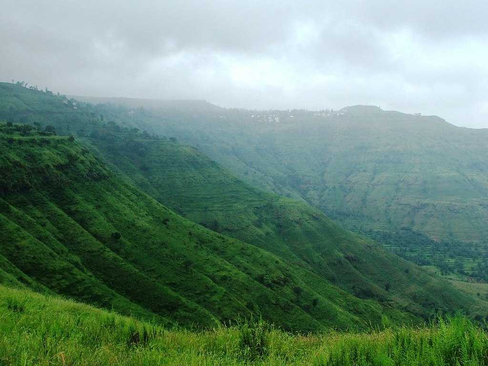

<div class="container-fluid">
    <div class="row">
        <div class="col-md-12">
            <div class="card bg-dark text-white">
                
                <div class="card-img-overlay">
                    <h5 class="card-title-main">Welcome to Pachgani!</h5>
                </div>
            </div>

            <div class="p1 mt-3">
                <p>
                    At a distance of 18 km from Mahabaleshwar, 48 km from Satara, 104 km from Pune, and 254 km from
                    Mumbai, Panchgani, also called Paachgani,
                    is a famous hill station and municipal council in
                    Satara district of Maharashtra. It is one of the top hill resorts near Pune & among the best places
                    to visit near Mumbai.

                    Situated at an altitude of 1334 m, Panchgani is one of the popular tourist places in Maharashtra and
                    among the must include places in
                    Maharashtra tour packages. Panchgani is bordered by Wai, Bavdhan, and Nagewadi dam in the east,
                    Gureghar in the west, Khingar and Rajpuri
                    in the south and Dhom dam in the north. Panchgani is nestled in middle of five hills in the Sahyadri
                    mountain ranges, also there are five
                    villages around the Panchgani which are Dandeghar, Khingar, Godwali, Amral & Taighat. Panchgani is
                    among the must include places in your
                    Mahabaleshwar tour packages.

                </p>
            </div>
            <div class="clearfix">
                
                <p>

                    The town was discovered by the British as a summer resort in the 1860s. Mahabaleshwar was the summer
                    resort of choice for the British,
                    but it was uninhabitable during the monsoons. Panchgani was developed as a retirement place for the
                    British as it remained pleasant
                    throughout the year. John Chesson, a British superintendent, was responsible for the transformation
                    of Panchgani into a summer resort.
                    It is also said that, during Vanavasa, the Pandavas spent some time in Panchgani and the cave where
                    they stayed in the famous Devil's Kitchen.

                    Panchgani has several beautiful tourist attractions. Table Land, Parsi Point, Kamalgadh Fort,
                    Devil's Kitchen, Rajpuri Caves, Sydney Point,
                    Mapro Gardens, Dhom dam, etc. are some of the major tourist places to visit in Panchgani. Panchgani
                    is dotted with British-style old bungalows
                    and Parsi houses. It is also known for many residential educational institutions and a favored
                    destination for health resorts.

                    The best time to visit Panchgani is from September to February but the peak tourist season in
                    Panchgani is the monsoon & winter season from
                    September to December.
                </p>
            </div>
            <div class="clearfix">
                
                <p>

                    Timings: 24 Hrs<br>

                    Distance from Satara : 52 Kms<br>

                    How to reach:<br>

                    By Air: <br>
                    The nearest airport is at Pune(111Kms) and daily flights from other cities as well.<br>

                    By Rail: <br>
                    Trains arrive here from Satara, Triunelveli, Pondicherry and other cities.<br><br>

                    By Bus:<br>
                    Panchgani is well connected by bus with Mahabaleshwar, Mumbai, Pune, Satara, Bangalore, Goa,
                    Ahmedabad, and Shirdi.
                    <br>

                    By Road: <br>
                    Private transport is more convenient if you would like to visit places around Panchgani.<br>

                </p>
            </div>
            <div class="card mt-5">
                <h5 class="card-header">Hotels within 10kms</h5>
                <div class="card-body">
                    <div class="row">
                        <div class="col-sm-4">
                            <div class="card">
                                
                                <div class="card-body">
                                    <h5 class="card-title">Ambassador Hotel</h5>
                                    <p class="card-text">With supporting text below as a natural lead-in to additional
                                        content.</p>
                                    <a href="#" class="btn btn-primary">Book Room</a>
                                </div>
                            </div>
                        </div>
                        <div class="col-sm-4">
                            <div class="card">
                                
                                <div class="card-body">
                                    <h5 class="card-title">Cloud Mist
                                    </h5>
                                    <p class="card-text">With supporting text below as a natural lead-in to additional
                                        content.</p>
                                    <a href="#" class="btn btn-primary">Book Room</a>
                                </div>
                            </div>
                        </div>
                        <div class="col-sm-4">
                            <div class="card">
                                
                                <div class="card-body">
                                    <h5 class="card-title">Treebo Trend Prince Palace
                                    </h5>
                                    <p class="card-text">With supporting text below as a natural lead-in to additional
                                        content.</p>
                                    <a href="#" class="btn btn-primary">Book Room</a>
                                </div>
                            </div>
                        </div>
                        <div class="col-sm-4">
                            <div class="card mt-3">
                                
                                <div class="card-body">
                                    <h5 class="card-title">Treebo Tryst Nivanta
                                    </h5>
                                    <p class="card-text">With supporting text below as a natural lead-in to additional
                                        content.</p>
                                    <a href="#" class="btn btn-primary">Book Room</a>
                                </div>
                            </div>
                        </div>
                    </div>
                </div>
            </div>
        </div>
    </div>
</div>